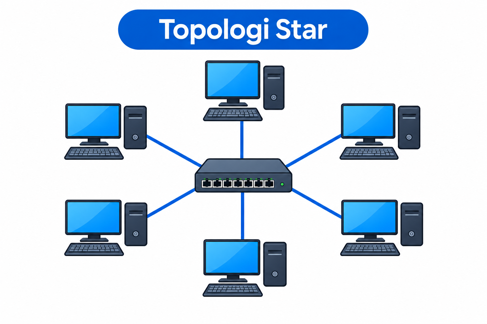
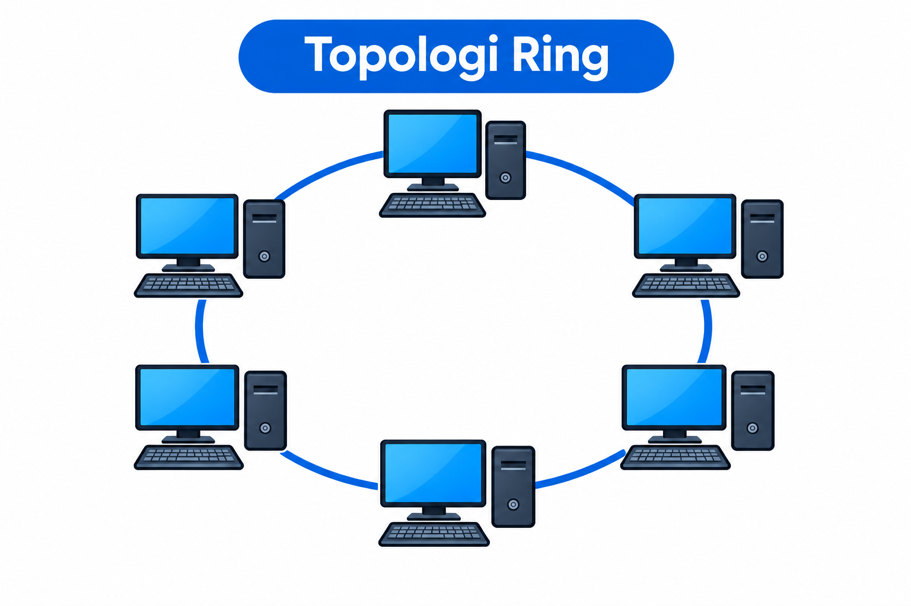
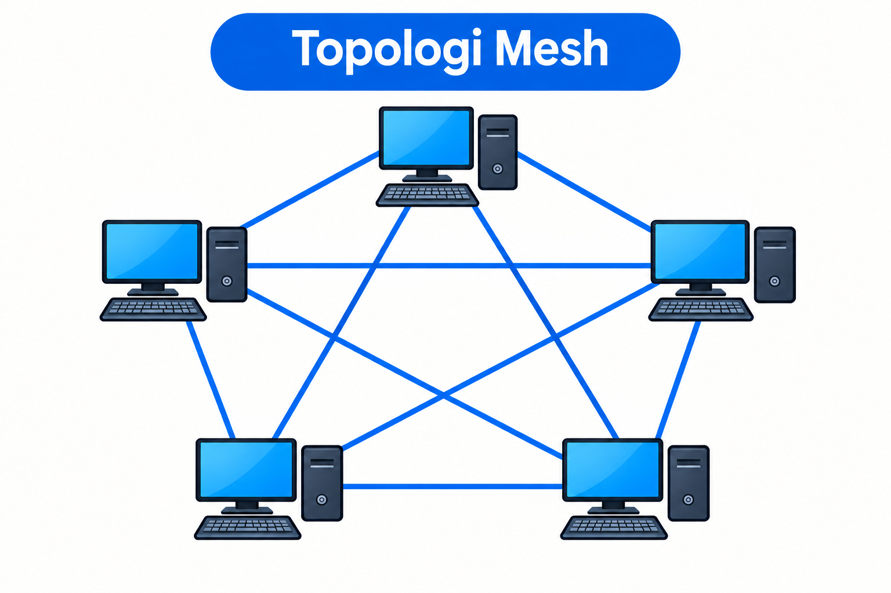
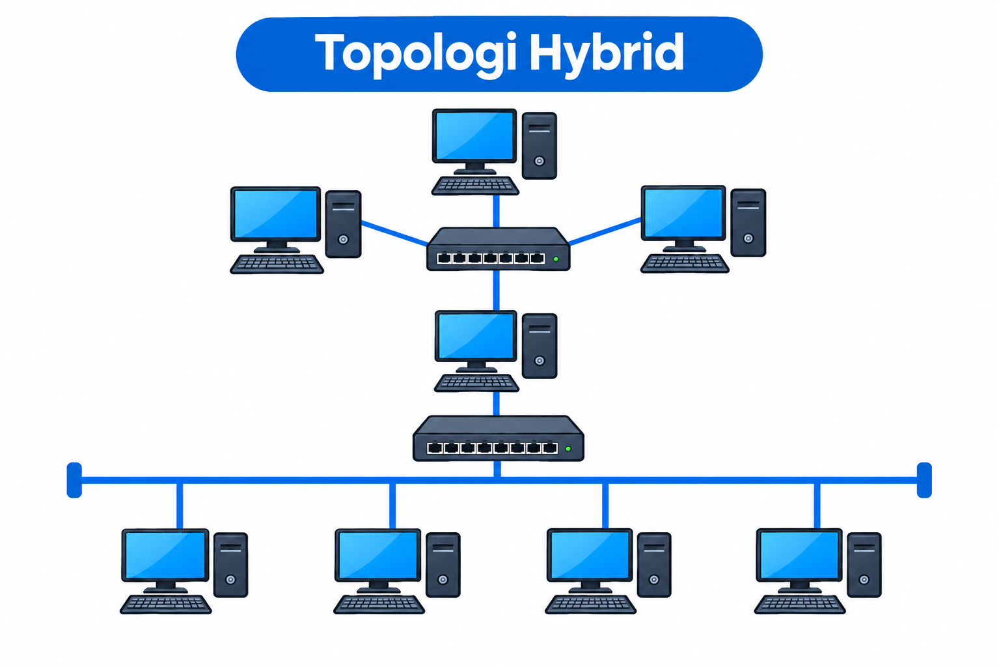

Pilih satu topik untuk mulai belajar jaringan komputer.
Pengertian Jaringan Komputer
Jaringan komputer adalah dua atau lebih komputer beserta perangkat pendukung lainnya yang
saling dihubungkan menggunakan sebuah media sehingga dapat saling berkomunikasi dan berbagi
sumber daya. Perangkat pendukung dapat berupa printer, server, kartu jaringan, atau perangkat
jaringan lainnya.
Contoh sederhana: komputer di laboratorium terhubung melalui media jaringan sehingga
pengguna dapat mengirim file ke printer bersama atau mengakses koneksi internet yang sama.
Manfaat Utama
Komunikasi dan pertukaran data, misalnya e-mail atau chatting.
Berbagi sumber daya: printer, server, file, program, dan koneksi internet.
Administrasi sistem secara terpusat.
Keamanan terpusat, misalnya melalui firewall.
Integrasi data dan pembagian beban pemrosesan.
Dampak bagi Pengguna
Memudahkan kerja sama dalam kelompok atau komunitas.
Menghemat biaya penggunaan hardware dan software.
Menghemat waktu dan tenaga saat bertukar informasi.
Meningkatkan produktivitas melalui data yang terintegrasi.
Mendukung kolaborasi dalam cakupan lokal hingga global.
1PengirimPerangkat membuat dan mengirim data.
2MediaPenghubung dapat berupa kabel atau nirkabel.
3PenerimaPerangkat tujuan menerima data.
Video Pendukung 1
Video Pengertian Jaringan
Tonton rangkuman konsep dasar sebelum melanjutkan latihan.
Belum selesai
Tonton sampai selesai untuk menandai video ini sebagai selesai.
Latihan singkat
Uji konsep dasar
1 soal
Salah satu tujuan utama jaringan komputer adalah...
Jenis-Jenis Jaringan Komputer
Jenis jaringan komputer merupakan pengelompokan jaringan berdasarkan jarak jangkauan atau luas area yang dilayaninya. Berdasarkan jangkauannya, jaringan komputer dibedakan menjadi beberapa jenis, yaitu LAN, MAN, dan WAN.
LAN
Local Area Network
LAN berada dalam ruang lingkup sangat terbatas, misalnya ruangan, rumah, hingga gedung bertingkat.
Cakupan wilayahSekitar 10–300 meter
Contoh penggunaanLaboratorium komputer, warnet, rumah, atau divisi perusahaan
Media umumKabel UTP, switch, dan access point WiFi
MAN
Metropolitan Area Network
MAN menghubungkan beberapa jaringan LAN yang masih berada dalam lingkup satu kota.
Cakupan wilayahSatu kota atau wilayah metropolitan (sekitar 5–50 km)
Contoh penggunaanJaringan antar kantor cabang bank dalam satu kota
Media umumSerat optik atau koneksi khusus antar lokasi
WAN
Wide Area Network
WAN melingkupi area sangat luas, melintasi kota, provinsi, pulau, bahkan benua.
Cakupan wilayahAntar kota, pulau, hingga antar negara
Contoh penggunaanJaringan internet, koneksi kantor pusat dengan cabang luar kota
Media umumInternet, satelit, serat optik, atau jaringan seluler
Video Pendukung 2
Video Jenis-Jenis Jaringan
Gunakan video ini untuk memperkuat perbedaan LAN, MAN, dan WAN.
Belum selesai
Tonton sampai selesai untuk menandai video ini sebagai selesai.
Latihan singkat
Kenali cakupannya
1 soal
Jaringan yang mencakup wilayah satu kota disebut...
Topologi Jaringan
Topologi jaringan adalah pola atau bentuk susunan hubungan antarperangkat dalam sebuah jaringan komputer.
Topologi menunjukkan bagaimana komputer, server, switch, dan perangkat jaringan lainnya saling terhubung dan berkomunikasi.
Adapun beberapa jenis topologi jaringan antara lain:
BUS
Topologi Bus
Komponen terhubung pada jalur komunikasi utama (trunk atau backbone).
Pada topologi Linear Bus, setiap komponen terhubung ke trunk atau backbone sehingga membentuk satu segmen jaringan. Kedua ujung kabel menggunakan terminator untuk mencegah sinyal terserap; media yang digunakan adalah kabel coaxial.

STAR
Topologi Star
Setiap komponen terhubung ke perangkat pusat.
Pada topologi Star, setiap komponen terhubung ke perangkat jaringan pusat seperti hub, switch, atau router. Jika beberapa Star dihubungkan hingga membentuk Star baru, hasilnya disebut Extended Star. Media koneksinya dapat berupa kabel UTP.

RING
Topologi Ring
Komponen terhubung pada backbone berbentuk loop tertutup.
Pada topologi Ring, setiap komponen terhubung ke jalur komunikasi utama yang membentuk loop tertutup. Pada Token Ring, pengkabelan dapat berbentuk Star dan loop dibentuk oleh perangkat MAU (Media Access Unit).

MESH
Topologi Mesh
Komponen memiliki jalur langsung khusus ke komponen lain.
Pada Full Mesh, setiap komponen memiliki hubungan langsung atau jalur khusus ke setiap komponen lain dalam segmen. Jika satu jalur khusus dihilangkan, bentuknya disebut Partial Mesh.
TREE
Topologi Tree
Jaringan disusun bertingkat seperti cabang pohon.
Topologi Tree adalah topologi yang memiliki struktur bertingkat seperti pohon, dengan beberapa jaringan yang tersusun secara hierarki.

HYBRID
Topologi Hybrid
Menggabungkan dua atau lebih jenis topologi.
Topologi Hybrid adalah topologi yang merupakan gabungan dari dua atau lebih jenis topologi jaringan, misalnya gabungan topologi Star dan Bus.
Video Pendukung 3
Video Topologi Jaringan
Lihat visualisasi topologi sebelum menyelesaikan evaluasi akhir.
Belum selesai
Tonton sampai selesai untuk menandai video ini sebagai selesai.
Latihan singkat
Pilih topologi tepat
1 soal
Topologi yang menghubungkan semua perangkat ke satu perangkat pusat adalah...